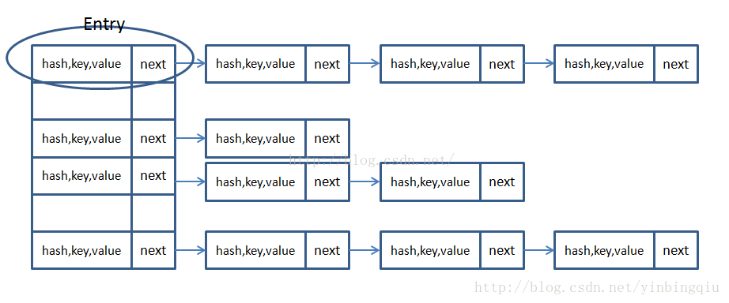
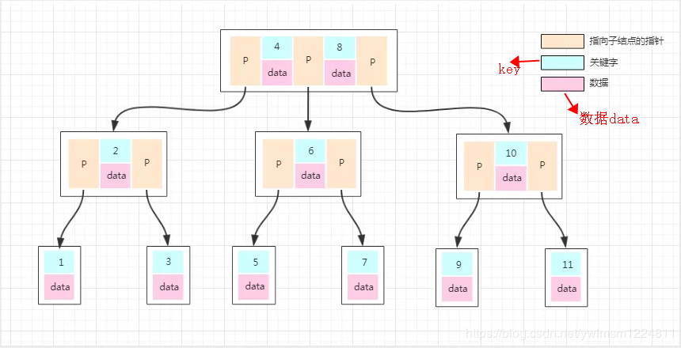
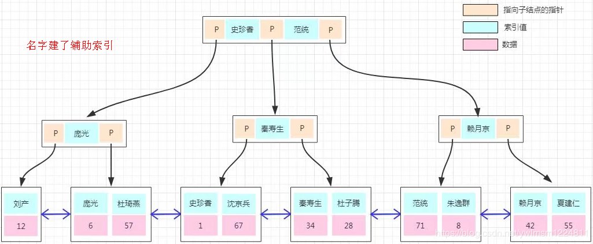

JS去重
- 排序，遍历顺序比较，不同就push到新数组
1 | let c=[1,2,3,4,5,6,1,2,3] |
- indexOf遍历
1 | let c=[1,2,3,4,5,6,1,2,3] |
- map()/forEach()
- set
1 | let c=[1,2,3,4,5,6,1,2,3] |
递归regression
Fibonacci
1 | //迭代，number=40,time=1ms |
变种：青蛙跳台阶
数据结构
链表
翻转链表
有序链表合并
1 | public ListNode Merge(ListNode list1,ListNode list2) { |
堆和队列
用队列实现堆栈
用堆栈实现队列
Sorting
HTTPS的认证过程

TCP/IP
三次握手
Java基础
HashMap实现原理
HashMap是拉链(Hash再散列的一种方式)的一种实现方式（JDK1.7之前，以及1.8以后，阈值小于8），左边一列为数组（位桶数组），右边为链表（Entry链，通过equal判断）

Hashmap在JDK1.8，阈值大于8后，采用红黑树
1 | static final class TreeNode extends LinkedHashMap.Entry { |
HashMap，HashTable，ConcurrentHashMap
！！可能有错，还未梳理完成
| hashmap | hashtable | concurrentHashMap | |
|---|---|---|---|
| 底层 | 数组+链表 | 数组+链表 | 数组+链表 |
| 线程安全 | √ | × | × |
| null | kv不能为空 | kv可以为空 | |
| 初始大小 | 11 | 16 | |
| 扩容 | 2*old+1 | old*2 | |
Redis
使用场景
- 缓存
- 登录session
feature：
- 基于内存（快的原因）
- 数据结构简单（set hash list zset）
- 单线程，避免不必要的上下文切换和竞争条件，没有锁，多路I/O复用，非阻塞（和Nodejs一样）
分布式
Kafka优缺点
- 高吞吐量的消息队列，基本组件：消费者，生产者，node节点等
- 副本………………
概念
幂等性
数学上，对于x，有f(x)=f(f(x))，则成为幂等性
在分布式环境下，表示对同样的请求，在一次或者多次请求的情况下，对系统的使用资源是一样的，保证失败重试不会导致提交两次
堆栈内存
堆内存：是线程共享的,new
栈内存：线程私有的,基本类型的变量和对象的引用变量
数据库
事务Transaction
是一个操作序列，不可分割的工作单位，以begin transaction开始，以rollback/commit结束
| 特性 | Desc |
|---|---|
| 原子性Atomicity | 全对或回滚 |
| 一致性Consistency | 多次事务结果相同 |
| 隔离性Isolation | 事务间互不影响 |
| 持久性Durability | 一但成功即永久 |
并发一致性问题
- 丢失修改，后事务对一个未完成事务修改覆盖
- 脏读，后事务对一个未完成事务修改过的数据读
- 不可重复读，后事务读取过程中数据被修改
- 幻读，类似不可重复，区别于是插入操作修改
四种隔离级别
- 未提交读
- 提交读
- 可重复读（MYSQL默认隔离级别）
- 可串行化（事务全部串行，效率低）
乐观锁&悲观锁
悲观锁：先锁再操作，适合数据修改频繁场景
乐观锁：先读，读的时候在判断是否有事务再更新，有则重读（通过加版本号或者时间戳作为字段为判断依据，缺点就是每次数据更新都需要更新这个字段）
封锁类型
- 排它锁X
- 共享锁S 只读共享
- 意向锁
三级封锁协议（待补充，不重要）
- 一级，X
- 二级
- 三级
数据库索引的实现原理（B+树）
innoDB中使用的B+树
- IO次数少，B+树中间节点存储索引，数据在叶子节点中
- 查询B树要遍历，B+只需要遍历叶子节点
why 选择B+
- 效率比O(1)好
- B树索引支持大小比较，范围查找
innodb和myISAM区别
- innodb支持事务
- myisam仅有表级锁，innodb表+行锁
- innodb支持外键
- innodb在线热备份
数据库优化
SQL优化
该部分基本需要遵守一些准则，合理利用索引
- 避免!=,>,<,null的判断（索引失效）
- 返回必要的列，减小select * (graphQL解决方案)
- Limit限制
索引优化（主）
- 建立合适的索引，不能太多，也不能太少（太少全表检索用不到索引，太多就冗余，索引可能比数据还多？）
表结构优化
- 范式遵循（默认3）
- 选择合适类型，尽可能不要存储null
- 水平切分，根据哈希取模，将一个表水平切分，当一个表中数据增多时，sharding，将数据分不到集群的不同节点上
- 垂直切分，将不常用的字段独立放一个表中
配置优化
- 增加TCP支持的队列
- MYSQL配置缓存池大小
- etc
硬件优化（次）
- 磁盘性能
- CPU
- 内存
主从复制Replication
将数据从一个mysql中复制到其他服务器中，默认异步同步
- 主服务器binary log dump线程将数据更改写入日志
- 从服务器IO线程读取数据修改日志，写入本地relaylog
- 从服务器SQL线程，读取relaylog解析并执行
why选择主从复制
读写分离，主写从读
缓解锁竞争
从使用myisam提升查询性能
数据实时备份
降低单个IO访问频率（显然）
索引分类
- 普通索引
- 唯一索引，索引值唯一，可空
- 主键索引，唯一不可空
- 复合索引
- 覆盖索引
- 聚集索引
- 分区索引
- 虚拟索引
MVCC
multi-version concurrency control
每行记录后面保存两个隐藏的列用来存储版本号和删除版本号
- 创建版本号：创建数据时的事务版本号
- 删除版本号：同上
范式
依次严格
- 第一范式：不存在可分的列
- 第二范式：主键
- 第三范式（默认）外键
- 第
表连接方式
内连接：满足连接条件的行组合起来（交集）
- 自然连接
- 等值连接
外连接：左连接，右连接，全连接
交叉连接：笛卡尔积，即m*n
存储过程
存储过程是事先经过编译并存储在数据库中的一段SQL语句的集合。
想要实现相应的功能时，只需要调用这个存储过程就行了（类似于函数，输入具有输出参数）。
优点：
- 预先编译，效率高
- 封装操作减少网络通信
- 可复用
- 安全性高，可以让低权限用户直接调用
- 易维护
缺点（可以忽略）：
- 移植性差
- 调试复杂
- 修改复杂
删除命令
- delete删除全表数据或部分数据，触发日志，可还原
- truncate清空所有数据不可回滚，自增重置为1，无日志
- drop删除数据，表，索引，约束不能回滚，无日志
视图
取出来的数据可视化，操作不影响数据库中数据
1 | CREATE VIEW view_name AS |
游标
定位查询返回结果集中的特定行，以对特定行进行操作，分普通游标和滚动游标（了解，应用不多）
ACID特性
原子性：
一致性：
隔离性：
持久性：
如何rollback
写入前会有redo log和undo log，如果失败会逆向还原到事务开始之前
B-Tree vs B+Tree
原因：每个节点融入更多元素，多叉
B树存储数据：
- 对比B+的Feature看

B+存储数据：
引入原因：相对于BTree高度更低（非叶子节点数据更多），查询效率更高（聚簇索引+叶节点链环）
- 查询效率高
- 如查询3-7，查到3后可以直接链式遍历到7（大于小于等搜索效率高）
- key都在叶节点，非叶子节点不存储数据，提高效率
- 同等情况下，一般B+更矮
- 默认每个页的大小为 16K,即每个叶子节点为一页
- 聚簇索引clustered index，叶子节点是数据，数据在物理上是按主键 key 顺序存放
- 非聚簇索引secondary index，叶子节点是key，数据在物理上按插入的顺序存放

灵魂拷问
Java多线程
- 线程池的原理，为什么要创建线程池？
- 线程的生命周期，什么时候会出现僵死进程；
- 什么实现线程安全，如何实现线程安全；
- 创建线程池有哪几个核心参数？如何合理配置线程池的大小？
- synchronized、volatile区别、synchronized锁粒度、模拟死锁场景、原子性与可见性；
JVM相关
- JVM内存模型，GC机制和原理；GC分哪两种；什么时候会触发Full GC？
- JVM里的有几种classloader，为什么会有多种？
- 什么是双亲委派机制？介绍一些运作过程，双亲委派模型的好处；(这个我真的不会…)
- 什么情况下我们需要破坏双亲委派模型；
- 常见的JVM调优方法有哪些？可以具体到调整哪个参数，调成什么值？
- JVM虚拟机内存划分、类加载器、垃圾收集算法、垃圾收集器、class文件结构是如何解析的；
Java扩展
- 红黑树的实现原理和应用场景；
- NIO是什么？适用于何种场景？
- Java9比Java8改进了什么；
- HashMap内部的数据结构是什么？底层是怎么实现的？
- 说说反射的用途及实现，反射是不是很慢，我们在项目中是否要避免使用反射；
- 说说自定义注解的场景及实现；
- List和Map区别，Arraylist与LinkedList区别，ArrayList与Vector 区别；
Spring
- Spring AOP的实现原理和场景；（应用场景很重要）
- Spring bean的作用域和生命周期；
- Spring Boot比Spring做了哪些改进？Spring 5比Spring4做了哪些改进；（惭愧呀，我们还在用Spring4，高版本的没关心过）
- Spring IOC是什么？优点是什么？
- SpringMVC、动态代理、反射、AOP原理、事务隔离级别；
中间件
- Dubbo完整的一次调用链路介绍；
- Dubbo支持几种负载均衡策略？
- Dubbo Provider服务提供者要控制执行并发请求上限，具体怎么做？
- Dubbo启动的时候支持几种配置方式？
- 了解几种消息中间件产品？各产品的优缺点介绍；
- 消息中间件如何保证消息的一致性和如何进行消息的重试机制？
- Spring Cloud熔断机制介绍；
- Spring Cloud对比下Dubbo，什么场景下该使用Spring Cloud？
数据库
- 锁机制介绍：行锁、表锁、排他锁、共享锁；
- 乐观锁的业务场景及实现方式；
- 事务介绍，分布式事物的理解，常见的解决方案有哪些，什么事两阶段提交、三阶段提交；
- MySQL记录binlog的方式主要包括三种模式？每种模式的优缺点是什么？
- MySQL锁，悲观锁、乐观锁、排它锁、共享锁、表级锁、行级锁；
- 分布式事务的原理2阶段提交，同步异步阻塞非阻塞；
- 数据库事务隔离级别，MySQL默认的隔离级别、Spring如何实现事务、
- JDBC如何实现事务、嵌套事务实现、分布式事务实现；
- SQL的整个解析、执行过程原理、SQL行转列；
Redis
- Redis为什么这么快？redis采用多线程会有哪些问题？
- Redis支持哪几种数据结构；
- Redis跳跃表的问题；
- Redis单进程单线程的Redis如何能够高并发?
- Redis如何使用Redis实现分布式锁？
- Redis分布式锁操作的原子性，Redis内部是如何实现的？